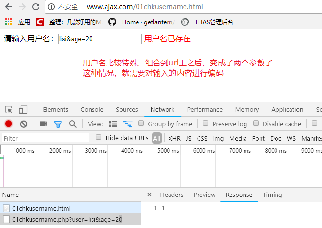
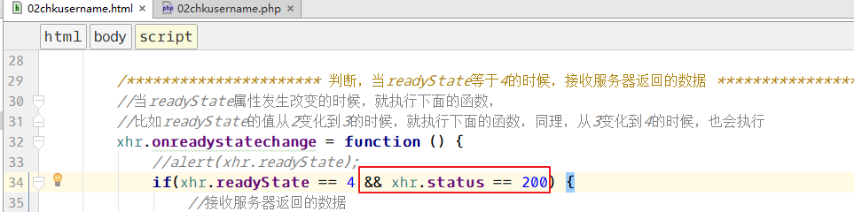

三、概述
手册位置：W3C手册 – 上面的JavaScript – 左侧的Ajax
1、Ajax历史
1999年，微软在IE5上使用，但是没有被认知。
2005年，谷歌的使用（地图、gmail），使得ajax被全世界所认识，并广泛使用。
2、Ajax是什么
Ajax中的第一个A是Asynchronous [eɪˈsɪŋkrənəs]
（异步）JavaScript and XML的缩写。可以看出它不是一种技术，而是多种技术的综合体。
其中有JavaScript、有xml、有json、有html、有css、有dom、有==XMLHttpRequest==对象等等，而且还必须有一种编程语言与ajax配合才行。
XMLHttpRequest对象，也叫做Ajax对象。
Ajax的工作也是基于http协议的。
3、Ajax能做什么
①、提高用户体验
②、表单实时验证

③、百度地图、谷歌地图
④、网页版的聊天室
⑤、无刷新的分页
四、Ajax工作原理
通过ajax向服务器发送请求的时候，实际上是通过浏览器内置的XMLHttpRequest对象来发送的请求，服务器返回数据的时候，也是返回到XMLHttpRequest对象，经过XMLHttpRequest的处理，最后将用户想要的结果输出到浏览器。

五、XMLHttpRequest对象介绍
1、创建ajax对象（ajax对象）
所有现代浏览器均支持 XMLHttpRequest 对象（==IE5 和 IE6 使用 ActiveXObject==）。
1 | //var xhr = new XMLHttpRequest(); //IE6+ |
2、主要的成员属性：
- readyState：表示ajax工作进行到何种状态
- onreadystatechange：事件，表示readyState改变的时候触发的事件
- status：http状态码
- responseText：用来接收返回的文本类型的数据
- responseXML：用来接收返回的是XML格式的数据
3、主要的方法
- open()：设置（定义）一个请求
- send()：发送设置好的请求
- setRequestHeader()：设置ajax请求头信息
六、==使用Ajax的步骤==(重点)
完成验证用户名案例，要求用户名唯一，就是不能有重复。
1、创建两个文件
创建文件，01chkusername.html 和 01chkusername.php 。
01chkusername.html：浏览器预览文件。
1 |
|
01chkusername.php ：检查用户名是否存在的脚本文件。
1 | //连接数据库，判断用户名是否存在。案例中，就不连接数据库了，假设zhangsan和lisi是存在的 |
2、绑定事件
给username绑定失去焦点事件，通过事件来操作数据
1 | <script> |
3、设置请求
1 | <script> |
4、发送请求到服务器
1 | <script> |
到这步，可以用浏览器进行检测，看数据是否发送到了服务器：

5、服务器接收请求的参数并判断
php文件：01chkusername.php
1 | //连接数据库，判断用户名是否存在。案例中，就不连接数据库了，假设zhangsan和lisi是存在的 |
通过浏览器工具，发现服务器确实能够返回对应的值：

6、判断Ajax执行的状态，然后接收服务器返回的数据
readyState是Ajax对象中的一个属性，它表示ajax执行的状态，它的值有5个，分别表示：
readyState的四个状态如下：
| 0 (未初始化) | 对象已建立，但是尚未初始化（尚未调用open方法） |
|---|---|
| 1 (初始化) | 对象已建立，尚未调用send方法，言外之意，open已经调用了 |
| 2 (发送数据) | send方法已调用，但是当前的状态及http头未知 |
| 3 (数据传送中) | 已接收部分数据，因为响应及http头不全，这时通过responseBody和responseText获取部分数据会出现错误， |
| ==4 (完成)== | ==数据接收完毕==,此时可以通过==responseBody==和==responseText==获取完整的回应数据 |
readyState应该配合另一个属性 onreadystatechange 来使用。onreadystatechange也是一个事件。
下面代码，15行之后是新加的代码，另外html中添加一个span标签。
1 | 请输入用户名：<input type="text" id="username" /> <span id="msg"></span> |
7、总结
使用Ajax的步骤：
- 创建ajax对象
- 调用open方法：open(请求方式, url, 同步或异步);
- 调用send方法
- 设置onreadystatechange事件，判断readyState
设置onreadystatechange事件，判断readyState这一步可以放到open之前。
七、其他问题
1、编码字符
encodeURI() — 不能对“:/=&”进行编码
encodeURIComponent() — 能对“:/===&==”进行编码

html页面对输入的内容进行编码：

PHP页面对获取的参数进行解码：

2、缓存处理
什么是Ajax缓存原理？
Ajax在发送的数据成功后，会把请求的URL和返回的响应结果保存在浏览器缓存内，当下一次调用Ajax发送相同的请求时，它会直接从缓存中把数据取出来，这是为了提高页面的响应速度和用户体验。==当前这两次请求URL完全相同，包括参数。这个时候，浏览器就不会与服务器交互，指的是IE浏览器==。
两次请求的地址完全一致（包括参数），那么IE就会从缓存中取服务器上一次返回的结果。而不会从新向服务器发送请求。
如何解决IE缓存的问题：
1、在ajax发送请求前加上xhr.setRequestHeader("If-Modified-Since","0");//实测可用

2、在服务器端加
1 | header("Cache-Control:no-cache"); |
加入三个header，表示适用于各个浏览器。
3、在 Ajax 的 URL 参数后加上 "?fresh=" + Math.random();，当然这里参数 fresh 可以任意取了

4、第种方法和第3种类似，在 URL 参数后加上 "?timestamp=" + new Date().getTime();

5、用POST替代GET：不推荐
==以上几种方式，比较推荐第3和第4中方法==。
3、get和post请求
使用POST请求，一定要设置下面的header：
xhr.setRequestHeader("Content-type", "application/x-www-form-urlencoded");

==使用post请求，PHP页面也使用对应的$_POST接收参数==。
ajax中的get和post的一些说明：
①、用post请求，不会产生缓存。
②、用post请求的时候，能不能也用get，即post和get请求同时使用。
答：能，只不过get请求的参数用$_GET获取，post请求的参数用$_POST获取。
③、用$_REQUEST获取get和post方式提交的参数，如果参数名相同，获取的是谁？
答：默认获取的是post的内容，根据php.ini配置文件中的配置。
4、同步、异步
==异步请求==，在同一个时间点可以执行多个进程；
==同步请求==，在同一个时间点，只能进行一个操作，其他操作只能等待。
在使用Ajax的时候，大多数都是异步请求，ajax请求什么时候结束，就立即处理ajax，如果ajax请求比较慢，那么继续加载当前页面的其他内容。

5、请求的url如果出错怎么办
如果请求的url出错，则http状态码就不是200了。所以在获取服务器返回数据的时候，在加入一个条件，只有http状态码等于200的时候，才接收服务器返回的数据。

八、JSON
1、什么是json
w3c手册位置：上面的javascript – 左侧的JSON
json==本质就是字符串==，只不过这个字符串的格式比较特殊，格式和JavaScript中的数组和对象的格式一样。
下面定义几个JSON格式的字符串：
①、 ==”==[‘apple’, ‘orange’, ‘banana’]==”==
②、 ==”=={name:’zhangsan’, age:20}==”==
1 | //声明两个符合json格式的字符串 |
2、json有什么用
json在web开发中，它起到的作用和xml和的作用一样。具体来说，json可以当做配置文件，json文件可以存储数据，json可以当做两种编程语言交换数据的媒介。
3、json和PHP进行转换（重要）
1、把PHP数据转化成json格式
使用函数 json_encode()
PHP的索引数组转换成json之后，和JavaScript中的数组一样的格式。
PHP的关联数组和对象转换成json之后，和JavaScript中的对象是一样的格式。
2、json数据转化成PHP数据
使用函数 json_decode()
1 | $arr1 = ['apple', 'banana']; |
4、json和JavaScript进行转换（重要）
把js数组或对象转换成json，使用 JSON.stringify();
把json字符串转换成js数组或对象，可以使用JSON.parse()，也可以使用eval()
1 | var arr1 = ['apple', 'banana']; |
九、==处理服务器返回json格式的数据==(重点)
Ajax请求的时候，如果服务器返回json格式的数据，如何处理。
案例–页面加载完毕，异步请求学生表的数据。
1、创建06stu.html
1 | <body> |
2、发送Ajax请求到06stu.php
1 | <script> |
3、06stu.php连接数据库查询并返回数据
1 | $pdo = new PDO('mysql:host=localhost; dbname=test; charset=utf8', 'root', '123'); |

4、js接收json数据并处理
1 |
|
十、==处理服务器返回XML格式数据==(重点)
服务器返回XML格式的数据，需要注意下面三点：
1、服务器端要指定header(‘content-type:text/==xml==; charset=utf-8);
2、浏览器端接收xml类型的数据用==responseXML==
3、浏览器端接收到的数据可以看做是document来使用。
创建02xml.html，验证用户名：
1 | <body> |
创建02xml.php，返回xml格式的数据：
1 | //指定返回的内容是xml |
浏览器测试：失去焦点后，看console的输出：

==得到的返回值res，可以当做document对象来使用==，可以使用类似document.getElementsByTagName()来获取标签中的内容：
1 | //输入框失去焦点的时候，发送ajax请求 |
十一、Ajax代码模版参考
1 | //[可选]绑定事件 |